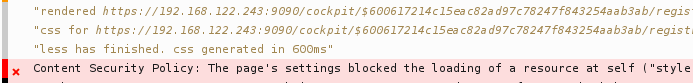

Cockpit is a
Linux admin interface
Cockpit is a
remote interactive
Linux admin interface
Zero footprint
Goals:
1. Linux usable
by non-expert admins
2. Complex Linux features
discoverable
2. Complex Linux features
discoverable
Cockpit: A Linux Session in your Browser
System APIs

Architecture
Authentication and Identity
Content-Security-Policy
Enforced security


Running Cockpit over SSH
Use wisely
Remember, Cockpit is
Interactive not Declarative
Contribute!
Get your software into Cockpit
Improve existing features
cockpit-project.org
#cockpit on Freenode
stef.thewalter.net
github.com/cockpit-project/cockpit
Red Hat, Inc